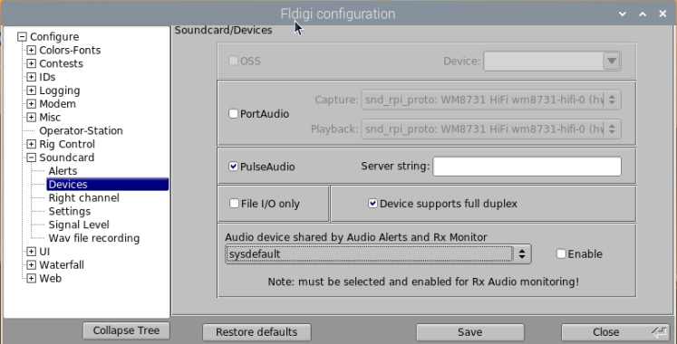

|
<< Click to Display Table of Contents >> Navigation: Other Programs > |
Fldigi is a popular open-source software application designed for amateur radio digital communications. It stands for "Fast Light Digital modem application" and was developed by Dave Freese (W1HKJ) and his team. Fldigi is available for multiple platforms, including Windows, macOS, and Linux.
Fldigi offers a comprehensive set of features for transmitting and receiving various digital modes over radio frequencies. It utilizes a computer's sound card to convert audio signals to digital data and vice-versa. Some of the digital modes supported by Fldigi include:
1. CW (Morse code): Fldigi can send and receive Morse code signals using the computer's sound card as a keyer.
2. BPSK and QPSK: These are phase-shift keying modes used for sending data signals.
3. RTTY: Fldigi supports various RTTY (Radio Teletype) modes, including ASCII, Baudot, and AMTOR.
4. PSK31: A popular digital mode for text-based communication using phase-shift keying.
5. Olivia: A robust digital mode that provides good performance under weak signal conditions.
6. MFSK: Multiple Frequency Shift Keying mode suitable for keyboard-to-keyboard conversations.
Fldigi offers features such as signal decoding, error correction, frequency shifting, and audio filtering. It also includes tools for signal analysis, logging, and integrating with other software applications.
Fldigi is widely used by amateur radio operators around the world for various purposes, including emergency communications, contesting, experimenting with digital modes, and general communication. It provides a flexible and versatile platform for digital radio communication enthusiasts.
Detailed instructions are beyond the scope of this manual, please refer to the Fldigi web site:
This Help topic covers use of Fldigi in RSS.
Radio Connection
RSS and Fldigi both use the Hamlib radio control library. Using the Hamlib "Net rigctl" radio selection in Fldigi it is possible to have both RSS and Fldigi control the radio.
Connect RSS to your radio in SETTINGS>Radio. Go to Fldigi Configuration>Rig>Hamlib. Select Hamlib NET rigctl (Beta) for Rig and localhost:<RSS Port> for Network Server. You can now control frequency from Fldigi or RSS.
The <RSS port> is determined by the account you wish to use in RSS.. Use the port number shown in RSS SETTINGS>Radio>Rigctl Port.
Logbook Connection
Contacts logged in Fldigi are automatically transferred to the active log in RSS for the account specified by the sync option in RSS SETTINGS>Users>Edit>Sync Fldigi Log.
Audio Connection
RigPi Audio or a radio CODEC is used for input and output audio for Fldigi. Choose the audio capture and output devices in the Capture and Playback drop-down lists in Fldigi Configuration>Audio associated with your setup.
Use these settings:

Using RigPi Keyer with Fldigi
Fldigi supports the K1EL Winkeyer for sending CW. To configure RigPi Keyer, go to Configure>Config Dialog>Modem>CW>WinKeyer. Select /dev/ttyS0 for the Ser Port. Select other options as desired, then click Connect. The indicator light in the Connect button turns yellow, and "Connected ti Winkeyer h/w/version 30" is displayed in Fldigi. You can now use Fldigi to send CW through the RigPi Keyer. (Note: Fldigi will report that Winkeyer version 31 or higher is required to use the RigPi Keyer for the Fldigi TTY mode if an older chip is found.)